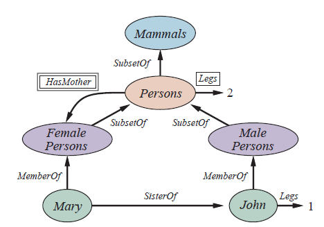
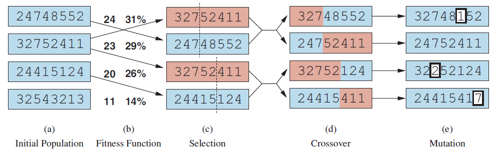
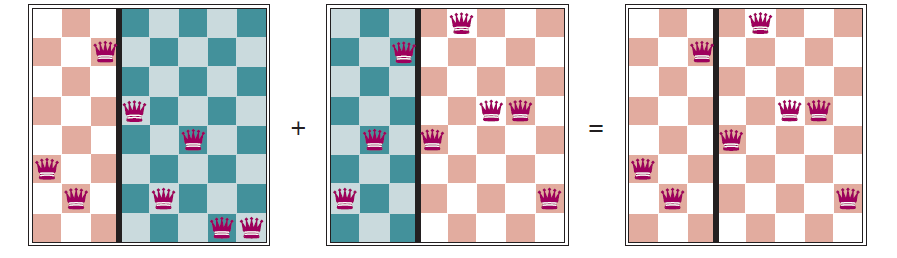

What is Artificial Intelligence (A.I.)?
The field of Artificial Intelligence concerns itself with building machines that are able to compute how to act effectively in situations where traditional algorithmic approaches fail and emulating human-like intelligence is better suited.
Naturally, this raises the problem of defining intelligence: some researchers view it in terms of fidelity to human performance, while others gave it the more formal definition of rationality - taking the "right decisions" to arrive at its goal in a more mathematical manner, so to say.
Through the lens of the former, Alan Turing proposed in the year of 1950 the following thought experiment: A computer passes the Turing test if a human interrogator, after posing a series of written questions, is not able to tell whether the responses they get come from a person or from a computer.
In order for a computer to pass a rigorously applied such test, it would need to possess the following capabilities:
- Natural language processing - to be able to communicate in a human language,
- Knowledge representation - to store the information that it learns,
- Automated reasoning - to answer questions and generate new conclusions,
- Machine learning - to adapt to newly encountered circumstances and to draw out patterns.
Furthermore, while the original Turing test did not view the physical simulation of a person as necessary, other researchers have proposed an extension of it, which requires interaction with objects and people in the real world.
Therefore, in addition to the above, a robot will also need:
- Computer vision and speech recognition - to perceive sensory information,
- Robotics - to manipulate objects and move through the world.
While researchers have devoted their efforts towards studying the underlying principles of intelligence, rather than passing the Turing test, the above may still serve as motivation as to why these six disciplines comprise most of AI[2].
As we can't mathematically define each aspect of human cognition, the prevailing approach to AI is that of the rational-agent: an entity that acts such that it achieves the best possible outcome given a set of circumstances.
This aligns well with the skills needed for the Turing test: knowledge representation and reasoning enable agents to take optimal decisions, learning improves the ability to generate effective behaviour even in the face of new circumstances, etc.
This paradigm became so widely spread that is known under the name of standard model. However, this model does have the limitation of needing to be supplied a fully specified objective.
This leads to erroneous situations: a self-driving car with the goal of keeping its passengers as safe as possible might never leave the garage, an AI tasked with winning a game might try to do so by any means possible, etc.
Therefore, it must be added to the standard model the dimension of value alignment: a tradeoff between progress towards the goal and the values of humans and society at large.
Historical milestones that influence today's AI
A list of important moments in history that influenced the trajectory of today's AI is the following:
- Neural Networks (1986 - present)
In the mid-1980s, different groups reinvented the back-propagation learning algorithms that was previously developed in the early 1960s, with Geoffrey Hinton as a leading figure in the resurgence of neural networks.
This connectionist approach was seen as direct competition to older symbolic models, having the advantage of forming internal concepts in a more fluid and imprecise way, better suited to the complexity of the real world. - Probabilistic reasoning and machine learning (1987 - present)
The limitations of expert systems (AI programs for decision-making given a domain-specific knowledge base), such as not performing well in the face of uncertainty, led to a new approach to AI: incorporating probability and statistics rather than Boolean logic and machine learning instead of hand-coding.
This enabled scientists to build on already existing mathematical research. For example, progress in the field of speech recognition was made through hidden Markov models - statistical models particularly useful for representing sequential data.
An influential work in this period was Judea Pearl's, Probabilistic Reasoning in Intelligent Systems. His development of Bayesian networks established a rigorous and efficient framework for representing uncertain knowledge, as well as practical algorithms for probabilistic reasoning.
Another major contribution was that of Rich Sutton connecting reinforcement learning to the theory of Markov decision processes, which found applications in robotics and industrial process control.
A consequence of AI incorporating statistical modeling, optimization techniques and machine learning resulted in reuniting with subfields such as computer vision, robotics, speech recognition, multi-agent system, natural language processing, which had previously become somewhat separate from core AI. This resulted in significant benefits both in terms of applications and in a better theoretical understanding of the core problems of AI. - Big data (2001 - present)
Advances in computing power and the World Wide Web have facilitated the creation of very large data sets containing billions of words, images, speech and video, as well as domain-specific information such as genomic data, vehicle tracking data, clickstream and social network data, etc.
This phenomenon is commonly referred to as big data and has led to the development of learning algorithms specially designed to take advantage of such large data sets.
Most often, the examples in these data sets are unlabeled. However, for example, suitable learning algorithms could achieve an accuracy of over 96% in identifying which sense was intended in a sentence. Furthermore, it was argued that stronger improvements could be attained by increasing the data size by two or three orders of magnitude, rather than tweaking the learning algorithm.
Another similar example could be observed in computer vision tasks such as filling in holes in photographs by blending in pixels from similar images. It was concluded that this technique worked poorly with a database of only thousands of images, but produces higher quality results with millions of images.
Soon after, the availability of ImageNet database comprising of millions of images, greatly accelerate progress in the field of computer vision. Furthermore, the availability of big data and the inclusion of machine learning into AI gave the field a commercial attractiveness it previously lost. - Deep Learning (2011 - present)
Deep learning is a subfield of machine learning that uses multiple layers of simple, adjustable computing elements - neural networks.
Experiments with neural networks were done in the previous decades and in 1990, the model of convolutional neural networks was successful in recognizing written digits. However, it wasn't until 2011 that deep learning became widely spread, especially in speech and visual object recognition.
In the 2012 competition launched by ImageNet, which required classifying images into a thousand categories, a deep learning system created by Geoffrey Hinton's group demonstrated a dramatic improvement over the previous existing systems.
Since then, deep learning systems have surpassed human performance on select vision tasks (while lagging in others). Improvements have also been noticed in speech recognition, machine translation, medical diagnosis, and game playing. This has resulted in bringing AI into the public's attention unlike any other point in history.
The availability of large amounts of training data, along with advances in computation power have also played a role in developing deep learning applications - a standard CPU can do \(10^9\) or \(10^{10}\) operations per second, while a deep learning algorithm running on specialized hardware (GPU, TPU, FPGA) might consume between \(10^{14}\) or \(10^{17}\) operations.
What can AI achieve today?
Below are some examples:
- Robotic vehicles: In 2019, Waymo test vehicles passed the threshold of 10 million miles driven on public roads without a significant accident, with the human driving taking over control only once every 6000 miles. Since 2016, autonomous fixed-wing drones have been providing cross-country blood deliveries in Rwanda.
- Autonomous planning and scheduling: NASA's Remote Agent program became the first on-board autonomous planning program to control the scheduling of operation for a spacecraft. It was able to generate plans for high-level goals sent from the ground and then monitor their execution by detecting, diagnosing and recovering from problems as they occurred.
The Europa planning toolkit is used for daily operations of NASA's Mars rovers and the SEXTANT system enable autonomous navigation in deep space, surpassing the capabilities of the global GPS system.
Furthermore, autonomous planning can be observed in the daily lives of regular people: apps capable of plotting optimal routes and take into account current and predicted future conditions such as Uber and Google Maps, provide services for millions of users. - Machine Translation: online machine translation systems render hundreds of billions of words per day for hundreds of millions of users. While improvement in their capabilities can be made, they can provide users with adequate results and in the case of closely related languages with a large volume of training data (such as French and English), translation within a narrow domain can approach human levels of performance.
- Speech Recognition: In 2017, Microsoft showed that its Conversational Speech Recognition System had reached a word error rate of 5.1% in transcribing telephone conversations, matching human performance. This proves useful as about a third of computer interaction worldwide is now done by voice rather than keyboard.
Other relevant services: Skype offers real-time speech to speech translation, virtual assistants offered by various companies can answer questions, control smart home devices, set reminders, provide directions, with some even being able to make calls to businesses to book appointments on behalf of the users. - Recommendations: Companies such as Amazon, Facebook, Netflix, Spotify, YouTube etc. make use of machine learning to recommend content to users based on their previous experiences and that of similar users.
Additionally, spam filtering can also be considered a form of recommendations, with current AI techniques being able to filter out over 99.9% of spam. Email services are also able to recommend potential recipients or possible response texts. - Image understanding: Encouraged by the excellent results in object recognition tasks, computer vision researchers have undertaken the more difficult problem of image captioning - generating descriptions depending on the context of an image. However, current systems are still facing significant challenges in this area.
- Medicine: AI algorithms are able to equal or exceed expert doctors at diagnosing a plethora of conditions, especially when the diagnosis is based on images. Examples include: Alzheimer's disease, metastatic cancer, ophthalmic and skin disease.
One current direction of medical AI research is facilitating partnerships between humans and machines. For example, the LYNA system achieves 99.6% overall accuracy in diagnostic metastatic breast cancer, which surpasses the performance of an unaided human expert.
Widespread adoption of such techniques are limited by the need to demonstrate improvement in clinical outcomes and ensure transparency, data privacy and lack of bias, rather than by diagnostic accuracy. - Climate science: In 2018, a team of scientists won the Gordon Bell Prize for developing a deep learning model that was able to leverage existing, but hard to go through data into discovering detailed information about extreme weather events. They used a supercomputer with a specialized GPU hardware in order to exceed \(10^{18}\) operations per second, being the first machine learning program to do so.
Theory
Theory concerns itself with developing abstract principles and frameworks in order to describe the underlying mechanisms and relationships among objects in a domain. The major branches of theory in Artificial Intelligence and Robotics are:
- Logic systems for mechanical reasoning
- Propositional logic deals with statements that are either true or false. Through the use of logical connectives (OR, AND, NOT), it is able to form complex expressions from basic units called atomic propositions. It offers a simplistic binary framework for encoding facts about the world and model relationships between them; it can allow AI systems to infer new facts and take decisions based on a set of rules.
- First-order predicate logic is able to express much more intricate relationships between objects, through the addition of predicates (functions that return either true or false), along with specifying the scope of a statement through universal and existential quantifiers. Not only it allows for a more sophisticated knowledge representation and decision-making, but it can also aid in representing natural language statements in a concise way.
- Fuzzy logic enables AI systems to work with imprecise information by introducing the concept of partial truth. Truth values range between completely true and completely false.
This is achieved by assigning each element a degree of membership to a set, ranging from 0 to 1.
For example, we might consider a fuzzy set "tall people". This set's associated membership function might assign a value of 0.8 to a person who is 1.8 m tall, indicating that this person belongs to the set of "tall people" to a degree of 0.8.
The classic logical operations are also updated to reflect this new way of thinking: for example, the fuzzy AND takes the minimum of the truth values of its operands. - Temporal logic introduces temporal operators ("always", "eventually", "until", "next") to express how the truth of a statement may change over time. This offers humans the possibility to inform AI systems as to what things we would like to happen in the near future, what we want to avoid and which states we'd want to persist indefinitely.
- Non-monotonous logic allows reasoning systems to invalidate previous inferences if new, contradictory data is introduced. This enables AI systems to handle uncertain information, as now assumptions can be made when dealing with incomplete information and retracted, if necessary, when new facts are gathered.
- Probabilistic logic is able to manage uncertainty by assigning a probability to a given statement instead of a binary truth value. Uncertain quantities are expressed as random variables. Their interdependencies can be expressed through conditional probability (i.e. the probability of an event given that another event has occurred) and can be represented through Bayesian Networks (graphical models in which each node represents a random variable and the edges, the dependencies between them).
Example: Let’s say we want to diagnose a disease based on symptoms using probabilistic logic:
Random variables: \(D\): The patient has the disease and \(S\): The patient shows symptoms.
Let's assume the following probabilities:- \( P(D) = 0.01 \): There's a 1% chance that a randomly selected patient has the disease.
- \( P(S \mid D) = 0.9 \): If the patient has the disease, there's a 90% chance they will show symptoms.
- \( P(S \mid \neg D) = 0.2 \): If the patient does not have the disease, there's a 20% chance they will show symptoms.
- Formal models for representing and translating knowledge
- Objects are instances in a specific domain of interest. Organizing objects in general and flexible categories is a suitable way of representing knowledge from complex domains, since:
- it allows for "placeholders" to be filled with new information, similar to the way an OOP framework allows users to define a more specific instance of an object,
- a lot of the times when we reason, we firstly think of the broader category the object is a member of, rather than of a specific object,
- once objects are classified, it is easier to infer predictions about said objects
- categorizing objects allows for inheritance (similar to OOP, an object inherits the attributes of the category it is a subclass of).
- Grammars: Objects can be mapped to symbols. A grammar will contain a set of production rules that dictate how symbols may be combined in order to form valid statements within a formal language.
The types of symbols a grammar works with are:- non-terminals (representing syntactic categories, such as expressions and terms)
- terminals (the actual symbols or tokens of the language, such as characters and keywords)
We define a CFG as follows: A grammar is context free if each of its productions maps one non-terminal to a string of zero or more nonterminals and terminals
However, natural languages do not hold such a strong boundary between allowable and unallowable sentences as in the case of formal languages. Furthermore, we might encounter sentences that are:- ambiguous: "I saw the man with the telescope."
- uncertain: "The weather forecast says it might rain tomorrow."
We can analyze the likelihood of different structures by assigning a probability to each production rule and thus extending CFGs to probabilistic context-free grammars (PCFG).
PCFGs will work as follows:- Adding the probabilities assigned to all the rules expanding one particular non-terminal must result in 1.
- The probability of obtaining a certain derivation is the product of the probabilities of the rules used to generate it.
Two possible interpretations are: "I used the telescope to see the man" and "I saw the man who had the telescope".
For simplicity, I will reduce them to "I used the telescope" and "I saw the man". Let's define a possible set of production rules with associated probabilities: \[ S \rightarrow NP \ VP \ [1.0] \] \[ NP \rightarrow N \ [0.5] \] \[ NP \rightarrow Det \ N \ [0.5] \] \[ VP \rightarrow V \ NP \ [1.0] \] \[ N \rightarrow I \ [0.25] \] \[ N \rightarrow man \ [0.25] \] \[ N \rightarrow telescope \ [0.5] \] \[ Det \rightarrow the \ [1.0] \] \[ V \rightarrow saw \ [0.3] \] \[ V \rightarrow used \ [0.7] \] For an easier understanding of the grammar rules: \(Det\) stands for Determiner, \(N\) for Noun, \(V\) for Verb, \(NP\) for Noun Phrase, \(VP\) for Verb Phrase.- Interpretation 1: "I used the telescope to see the man"
Formula Probability Product \( S \rightarrow NP \ VP \) \(1.0\) \( NP \ VP \rightarrow N \ VP \) \(0.5\) \( N \ VP \rightarrow I \ VP \) \(0.125\) \( I \ VP \rightarrow I \ V \ NP \) \(0.125\) \( I \ V \ NP \rightarrow I \ used \ NP \) \(0.0875\) \( I \ used \ NP \rightarrow I \ used \ Det \ N \) \(0.04375\) \( I \ used \ Det \ N \rightarrow I \ used \ the \ N \) \(0.04375\) \( I \ used \ the \ N \rightarrow I \ used \ the \ telescope \) \(0.021875\) - Interpretation 2: "I saw the man who had the telescope"
Through similar computation, it turns out that the probability of getting "I saw the man" is \(0.0046875\), so therefore the interpretation "I used the telescope" is more likely.
- Semantic networks provide a means to graphically visualize a knowledge base. Its building blocks are objects and categories of objects, usually displayed as oval or boxes, connected through labeled links which describe the relationship between them.

- Objects are instances in a specific domain of interest. Organizing objects in general and flexible categories is a suitable way of representing knowledge from complex domains, since:
- Methods for searching comprise of techniques and algorithms used when the next action to take is not immediately obvious, and a sequence of actions that lead to a goal state must be considered.
In AI, search methods play a crucial role in decision-making. Assuming an intelligent agent that has access to information about the problem space, then it can follow the four-phase process below:- Goal formulation: Establishing a goal limits its objectives and hence, any redundant actions it may take.
- Problem formulation: The agent builds an abstract model of the relevant part of the problem space by describing the states and actions necessary to reach its goal.
- Search: Before taking a definitive action, the agent simulates possible paths, searching until it either finds the one that leads to its goal or determines that no solution exists.
- Execution: The agent can now follow the successful path, step-by-step.
- in an entirely observable, deterministic, known environment, the solution to any problem is a fixed sequence of actions;
Example: A factory assembly line robot performing a fixed sequence of tasks where all actions and outcomes are predictable. - in a partially observable or nondeterministic environment, a solution would be adopting a branching strategy that searches for the optimal path, determined by what new data it may intercept.
Example: A self-driving car navigating through traffic would need to adjust its actions based on real-time, unpredictable data from sensors.
Genetic algorithms: are inspired by the metaphor of biology's natural selection: there is a population of individuals (states), out of which only the fittest (highest value) individuals get to produce offspring (successor states) that will go on and populate the next generation, through a process called recombination. There are a plethora of evolutionary algorithms, varying by the following factors:- population size;
- representation of individuals (usually as strings over a finite alphabet, just as DNA is represented as a string over the alphabet ACGT);
- the mixing number \(\rho\), equal to the number of parents required to form an offspring (although most commonly \(\rho = 2\), the case of \(\rho = 1\) may be seen as simulating asexual reproduction, while \(\rho > 2\), although rare in nature, can be simulated on computers);
- the selection process, either applied to the entire pool of candidates or to a partial, randomly selected one;
- the recombination procedure: a common approach when \(\rho = 2\) is to split each of the parent string at a randomly selected crossover point, then recombine the parts as to form two children, one with the first part of Parent 1 and the second part of Parent 2, while the other child the other way around;
- mutation rate: after an offspring has been generated, every bit in its composition is flipped with probability equal to the established mutation rate;
- the makeup of the next generation may comprise of just one newly formed offspring, or it may include a well-performing parent from the previous generation (elitism, a way to guarantee that overall fitness never decreases with time). Additionally, there may be applied the practice of culling, in which each individual below a certain threshold is discarded.
- Depicted in the figure above is a population of four 8-digit strings, each of them representing a state of the N-queens problem.
Each string can be converted into an \(8x8\) chess board populated by queens as follows: the i-th digit of the string indicates the row number of the queen in column i (counted from the bottom of the board upwards). - There can be a maximum number of non-attacking queens of \(8 \cdot 7 / 2 = 28\). To each string, we assign a fitness score computed by the formula "\( 28 - \text{number of attacking pairs} \)".
By drawing the associated boards, we may observe that the fitness scores obtained are as follows: 24, 23, 20, 11. We then convert them to probabilities by dividing each number by 78 and round the results to \(31\%\), \(23\%\), \(20\%\) and \(11%\). - Two pairs of parents are selected, in alignment with their probabilities: we may notice that one individual is selected twice, while one not at all. For each selected pair, a crossover point is chosen arbitrarily.
- The parent strings are crossed over, yielding new offspring.
In the picture above, the first two boards correspond to the first two parents in image (c), while the third board represents their child, as seen in (d). The green columns are lost during crossover, while the red columns are retained.
- For each digit, there is a small probability that is going to be mutated. This corresponds to randomly choosing a queen and moving it to a random square in its column.
This optimization technique may be applied in AI on a wide-range of problems, for example improving the learning rate of neural networks, the number of layers, number of neurons per layer, etc. - Theories of learning
Considering an intelligent agent (an entity that receives percepts from the environment and performs actions based on them), we say that it is learning if it improves its performance as a result of making observations about the world.
Let's take the example of a self-driving car. It may learn by observing a human driver as follows: mapping conditions to actions (observing when the driver brakes), learning to recognize objects (inferring what a bus looks like by seeing multiple labeled camera images), trying actions and adjusting future behavior based on results (braking suddenly on a wet road), taking into account passenger feedback, etc.
A common type of problem intelligent agents are tasked to solve is that in which:- the input is a factored representation (the data is broken into distinct, measurable components and arranged in the form of a vector of attribute values);
- the output is a finite set of values (for example, true/false or sunny/cloud/rainy) in the case of classification problems or numbers (for example, tomorrow's temperature) in the case of regression problems.
Based on the three types of feedback that may accompany the inputs, three types of learning are defined:
- Supervised learning: based on input-output pairs it receives (from a human, a sensor, a system, etc.), the agent infers the function that maps the first to the latter.
For example: from input in the form of camera images accompanied by outputs (in this case, called labels) saying "bus" or "pedestrian" etc., an agent could devise a function, so that when given a new image, it is able to map it to the appropriate label.
Going back to the example above, in the case of a braking action, a possible input would be the current state (direction or speed of the car, road condition, etc). The output could then be determined by the agent after the action is taken (for example, the distance it took to stop). - Unsupervised learning: the agent observes pattern in the input without being given explicit outputs (feedback). The most common task solved through unsupervised learning is clustering. For example, a computer vision system, given a high number of images, could put together a large cluster of similar images depicting the same object, let's say a car.
- Reinforcement learning: the agent learns through a series of rewards and punishments, which of its actions led to a beneficial outcome. A concrete example would be that of AlphaGo, an AI developed to play the board game Go, learned to play better than a human by analyzing the outcomes of millions of games.
Another example is that of ChatGPT. Its reward model generates multiple responses to a given input, which are then ranked by assigned human reviewers based on criteria such as relevance, coherence, and appropriateness. Based on these rankings, it learns to predict the quality of responses, assigning higher scores to those preferred by its reviewers. [1] [2]
[1]: P. J. Denning, "Computer science: The discipline"
[2]: P. Norvig, S. Russel "Artificial intelligence: A modern approach"